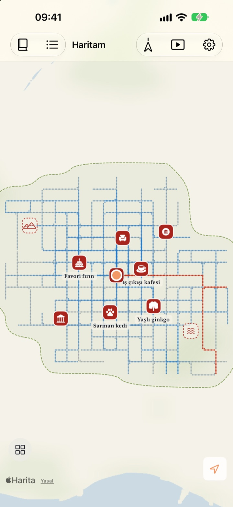
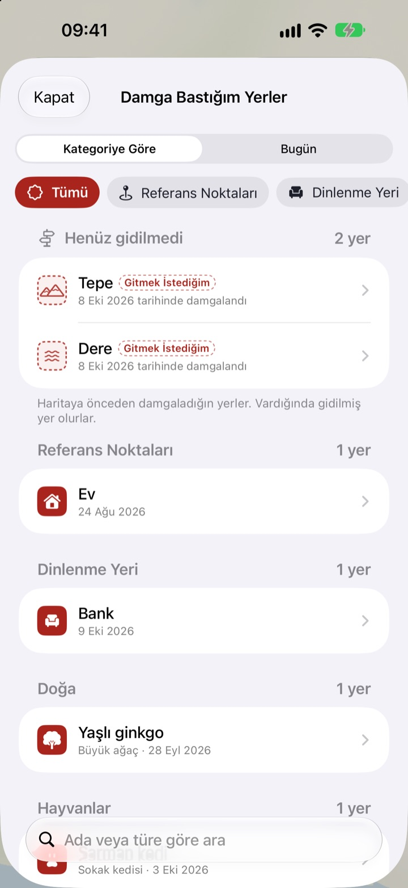
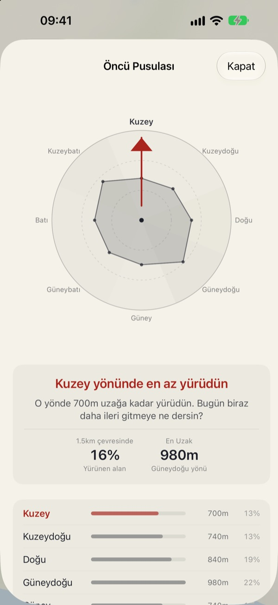
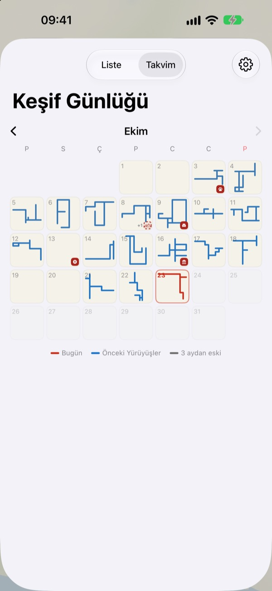

Yalnızca yürüdükçe
dolan bir harita
Boş bir kâğıt olarak başlar. Yalnızca yürüdüğün yerler nokta nokta dolar ve aynı sokağı yüz kez yürümek onu genişletmez. Haritayı büyütmek için yeni bir yola çık.
Tüm özellikler ücretsiz, reklam yok.

Bir yürüyüş yap
Yürümek için kâğıdın üzerinde parmağını ya da fareni sürükle. Mavi noktalar daha önce yürüdüğün sokaklar. Aynı yolları tekrar yürüdüğünde ve yeni bir yöne saptığında Bugün Çizilen Yol'un nasıl değiştiğine bak.
Her gün aynı sokaklarda mı yürüyorsun?
Adım sayar uygulamaları adımlarını sayar ama nereye gittiklerini hiç sormaz. Evden istasyona gidip dönmek halkayı doldurmaya yeter, hemen yandaki ara sokak ise yıllarca bilinmez kalır. Buktu Buktu yalnızca ilk kez yürüdüğün yolları sayar. Bu da bugün bir sokak öteden dolaşman için bir sebep.
Gittiğin ve gitmek istediğin yerlere damga bas
Durduğun yere damga bas ya da haritada istediğin yere uzun bas. Kategorilere ayrılmış 212 damga arasından seçebilirsin.
Hiç yürümediğin bir yere basılan damga gidilecek yer olarak kalır, oraya gerçekten vardığında gidilen yere dönüşür. Bir dükkân tabelasının fotoğrafını çek; arka plan kesilir ve tabela o noktada bir çıkartma olarak ayağa kalkar.

Sonraki yürüyüş: en az gittiğin yön
Öncü Pusulası çevreni sekiz yöne böler ve en az yürüdüğün yönü gösterir.
Bugünün Ayak İzleri, bugün durduğun yerleri sırayla ve aralarında ne kadar yürüdüğünle birlikte dizer.

Her gün bir şekil bırakır
Takvim, her günün yürüyüşünü bir sayı yerine şekliyle çizer. Yazı ve fotoğraflarla günlük tut, her yürüyüşün ne kadarının yeni yerlerden geçtiğini gör.
Bir dönem seç ve haritanın çizilişini dışa aktarabileceğin bir video olarak izle.

Başlamak için üç adım
- 1
Uygulamayı aç
Boş bir kâğıt açılır.
- 2
Konuma izin ver
Uygulamayı açmadan yürüyüşleri kaydetmek için Her Zaman'ı seç ve Hareket ve Fitness'ı aç.
- 3
Yola çık
Sokak ne kadar yabancıysa harita o kadar büyür.
Haritayı okumak
- Kırmızı noktalar
- bugün yürüdüğün yerler
- Çivit mavisi noktalar
- önceki yürüyüşler, en sık geçtiğin yerlerde daha koyu
- Gri noktalar
- üç aydan uzun süredir dönmediğin yerler. Solar ama asla kaybolmaz
- Kesik çizgili damga
- gidilecek bir yer. Oraya vardığında gidilen yer olur
- Çizdiğim Yollar
- ilk kez yürüdüğün tüm yolların toplam uzunluğu
- Bugün Çizilen Yol
- bugünkü yürüyüşün ne kadarının yeni olduğu
- Hepsini Birlikte Gör
- Ayarlar'da; Öncü Pusulası'nı, Bugünün Ayak İzleri'ni ve çizim filmini açar
Mürekkep harita ile Resimli Harita arasında seçim yapabilirsin.
Tüm özellikler ücretsiz
Ücretsiz
- Yalnızca yürüdüğün yerde dolan harita ve yeni yol takibi
- 212 damga ve tabela çıkartmaları
- Öncü Pusulası ve Bugünün Ayak İzleri
- Takvim ve yazılı, fotoğraflı günlük
- Haritanın çizilişini video olarak dışa aktarma
- Ana ekran ve kilitli ekran widget'ları
- Cihazlar arasında iCloud eşzamanlama
Geliştiriciyi destekle
- İstersen Ayarlar'dan küçük bir bahşiş gönder
- Bahşiş hiçbir şeyin kilidini açmaz. Uygulama her durumda aynıdır
Reklam yok, abonelik yok.
Sorular
Yürüdüm ama haritada hiçbir şey görünmedi.
Ayarlar > Buktu Buktu > Konum'a git, Her Zaman'ı seç ve Hareket ve Fitness'ı aç. Böylece uygulama kapalıyken de kayıt yapılır. Uygulama ayarlarında pil tasarruflu kayıt modunu seçtiysen yola çıkmadan önce uygulamayı aç. Doğruluğu düşük konumlar kaydedilir ama çizilmez.
Araba ya da metro yolculukları kaydedilir mi?
Hayır. Hareket verisine ve hıza bakarak yalnızca yürüme ve koşuyu çizer, taşıta benzeyen bölümleri dışarıda bırakır. Ara sıra yanılabilir.
Her gün aynı yolu yürüyorum ve harita büyümüyor.
Kural bu. Daha önce yürüdüğün yerin 30 m yakınındaki her yer aynı yol sayılır, bu yüzden Çizdiğim Yollar'a yalnızca ilk kez yürünen yollar eklenir. Karşı kaldırım da aynı yol sayılır. Öncü Pusulası en az yürüdüğün yeri gösterir.
Konumum bir yere gönderiliyor mu?
Geliştiriciye gönderilmez. Adımların, damgaların, günlüğün ve fotoğrafların cihazında ve kendi özel iCloud'unda kalır, geliştirici bunları göremez. Anonim kullanım istatistikleri asla koordinat, günlük metni, yer adı veya fotoğraf içermez. Koordinatları yer adlarına çevirmek için Apple Haritalar hizmetleri kullanılır. Ayrıntılar için aşağıdaki Gizlilik Politikası'na bak.
Kayıtlarım yeni cihaza taşınır mı?
Evet. Yeni cihazda aynı Apple Hesabı ile oturum aç ve iCloud'u açık tut; adımların, damgaların, günlüğün ve fotoğrafların seninle gelir.
Bir damgayı ya da fotoğrafı nasıl silerim?
Damgaları Damga Bastığım Yerler listesinden sil. Günlükteki bir fotoğrafı silmek için üzerine dokunup basılı tut. Tüm yolları ve günlük kayıtlarını tek seferde silme özelliği yol haritasında.
Widget'ı nasıl eklerim?
Ana ekranda dokunup basılı tut, Düzenle > Widget Ekle'ye dokun ve Buktu Buktu'yu seç. Kilitli ekranda ise dokunup basılı tut, ardından Özelleştir'e dokun. Ana ekran widget'ı bugünkü yolun şeklini ve uzunluğunu, kilitli ekran ise bugünkü mesafeyi gösterir.
Neye ihtiyacım var?
iOS 17.0 veya üzeri yüklü bir iPhone.
Nasıl iletişime geçerim?
Uygulama ayarlarından geri bildirim gönder ya da aşağıdaki adrese e-posta at. En kısa sürede yanıt veririz.
Soru ya da geri bildirim mi var? leeo@kakao.com adresine yaz.